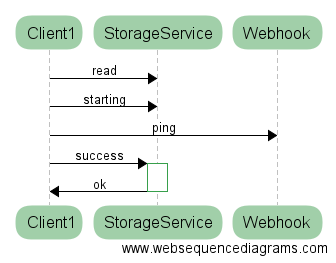
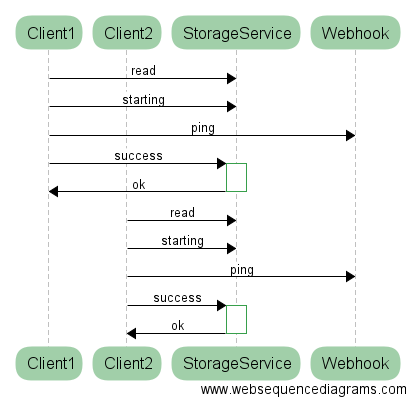
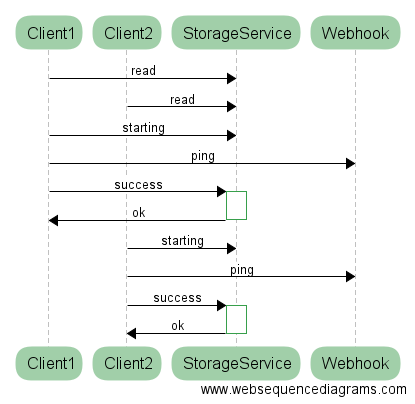
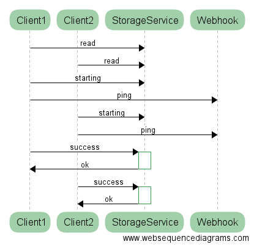
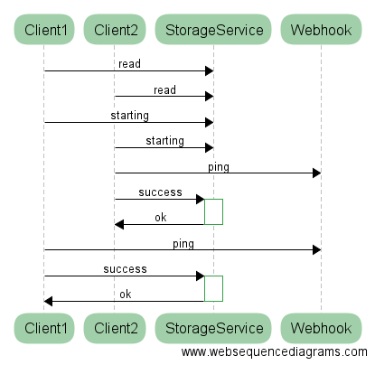
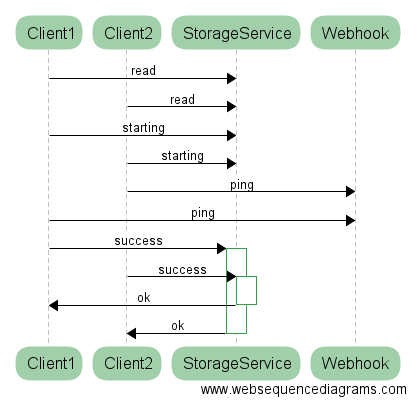

Dave Syer, 2016
Twitter: @david_syer (see also @artem_bilan, @gprussell)
Email: dsyer@pivotal.io
Warning: Here be Dragons!






Example code using java.util.concurrent.locks.Lock:
boolean acquired = false;
try {
acquired = lock.tryLock(10, TimeUnit.SECONDS);
if (acquired) {
// Do something unique!
}
} catch (InterruptedException e) {
Thread.currentThread().interrupt();
throw new RuntimeException("Interrupted");
} finally {
if (acquired) {
lock.unlock();
}
}
public interface LockRegistry {
Lock obtain(Object lockKey);
}
Example code using LockRegistry:
boolean acquired = false;
try {
acquired = lock.tryLock(10, TimeUnit.SECONDS);
if (acquired) {
// Do something unique!
}
} catch (InterruptedException e) {
Thread.currentThread().interrupt();
throw new RuntimeException("Interrupted");
} finally {
if (acquired) {
lock.unlock();
}
}
(same code)
A distributed lock nearly always has a shelf life (it expires).
Technically, that makes it a "lease".
Without expiry system can't make progress when a lock holder dies.
(At least) two problems are lurking:
Read this: http://martin.kleppmann.com/2016/02/08/how-to-do-distributed-locking.html
TL;DR If using a lock for "correctness" not "efficiency" be very careful.
Important: you can tune the system to adjust the probability, or how long it lasts, but fundamentally you cannot prevent the system from ever allowing more than one holder of a lock.
Simple idea: if you hold a lock you are the leader.
What can you do with it?
Highly available globally unique things, often with messages
Implementations of leader election need to be able to start an election and fire events on granted and revoked.
For a user it looks like this (create a new bean which is a SmartLifecycle):
@Bean
public LeaderInitiator leaderInitiator(CuratorFramework client,
Candidate candidate) {
return new LeaderInitiator(client, candidate);
}
(*) No support for etcd v3. Probably dead.
Callbacks on leadership events:
public interface Candidate {
void onGranted(Context ctx) throws InterruptedException;
void onRevoked(Context ctx);
...
}
See also:
@EventListener(OnGrantedEvent.class)
public void start() {
}
@EventListener(OnRevokedEvent.class)
public void stop() {
}
When to use locks and leaders: HA active/passive failover
How to avoid it: latency from restarting a failed app might be fine
Otherwise, be idempotent. For correctness, de-duplication store has to be ACID.
Relational databases can be really useful, as is Zookeeper.
Careful with the physics.
/
#